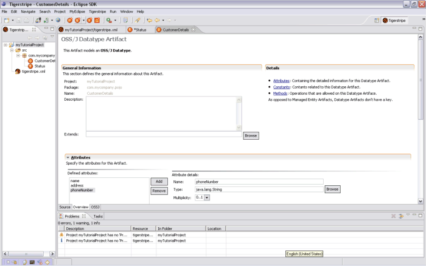

Artifact Editors
When editing the details of any artifact within a Tigerstripe project, a form-based editor is provided. For any artifact, this editor can be brought up by either double-clicking on the corresponding artifact in the Tigerstripe Explorer, or by right-clicking on the target artifact in the Tigerstripe Explorer and selecting Open.
The main page of any Artifact editor looks as follows:

All artifact editors follow the same structure, a 3-tab editor with the following content:
- Overview Tab: the overview tab contains the core information about all artifacts. In fact, they all share a common set of information, such as a name, a package, a description, etc... that will be found on this tab.
- OSSJ Tab: the OSS/J Tab provides a way to give the Tigerstripe generator additional information and hints on the elements to generate.
- Source Tab: the source tab provides a direct view in the source file in its internal Tigerstripe representation. This tab should only be reserved to expert users when needed.
Each tab is made out of Sections. For example the main tab as shown above is made out of the following sections:
- General Information: this section contains the general information about this artifact. This section appears on every artifact editor, as it corresponds to the common set of information required by all artifacts.
- Details: this section provides a high-level explanation of the content to be specified for a target artifact.
- Methods, Attributes, Constants: depending on the target artifact being editing these section will (or will not) be present. Each of them can expanded to create/edit/delete the corresponding artifacte elements (methods, attributes and constants).
For more information on the specific editors, please visit the corresponding section as they appear on this section.
© copyright 2005, 2006, 2007 Cisco Systems, Inc. - All rights reserved